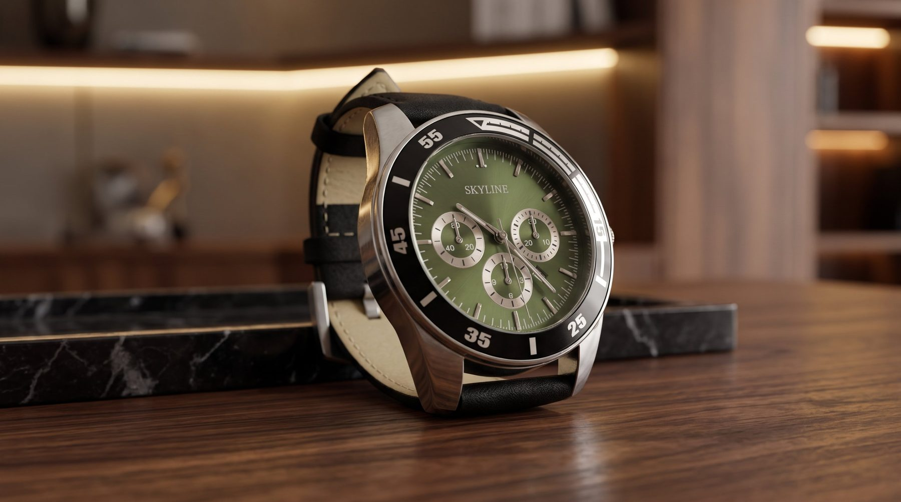
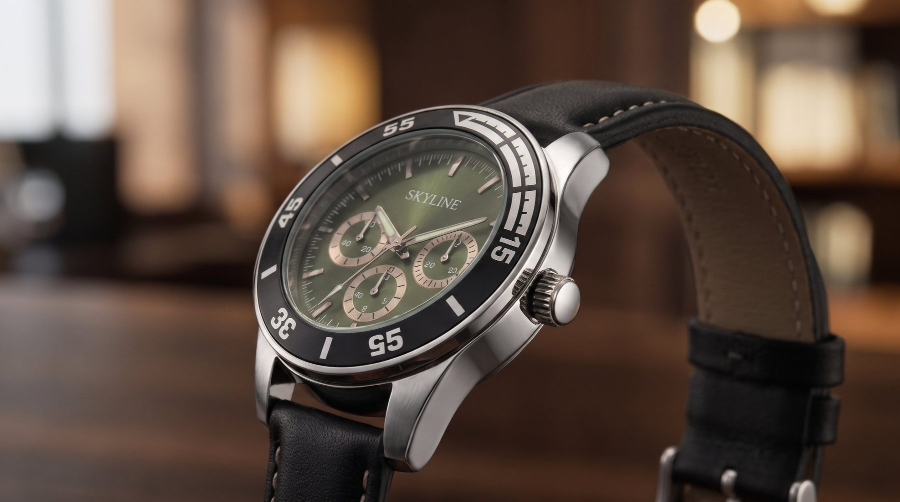
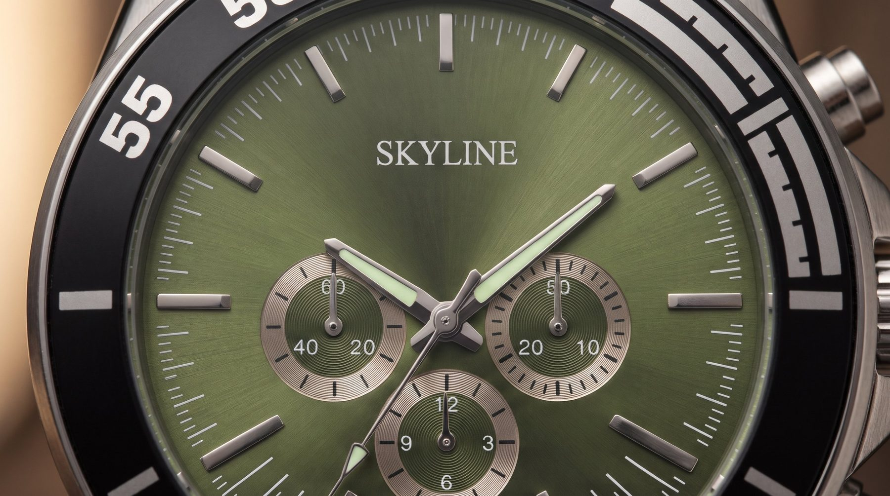
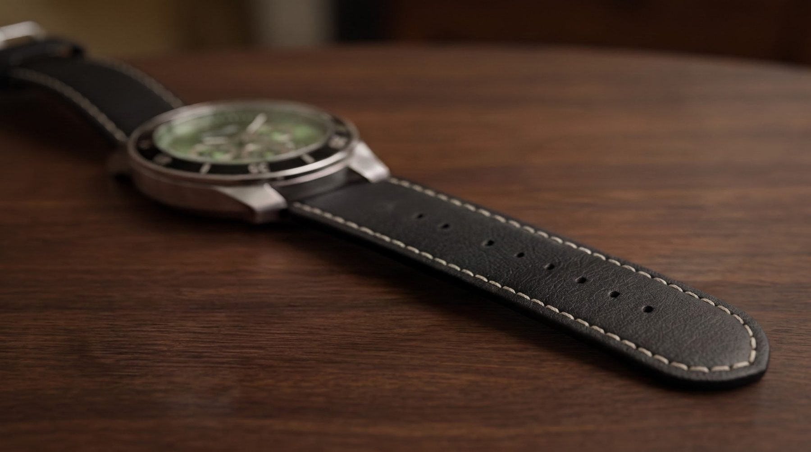
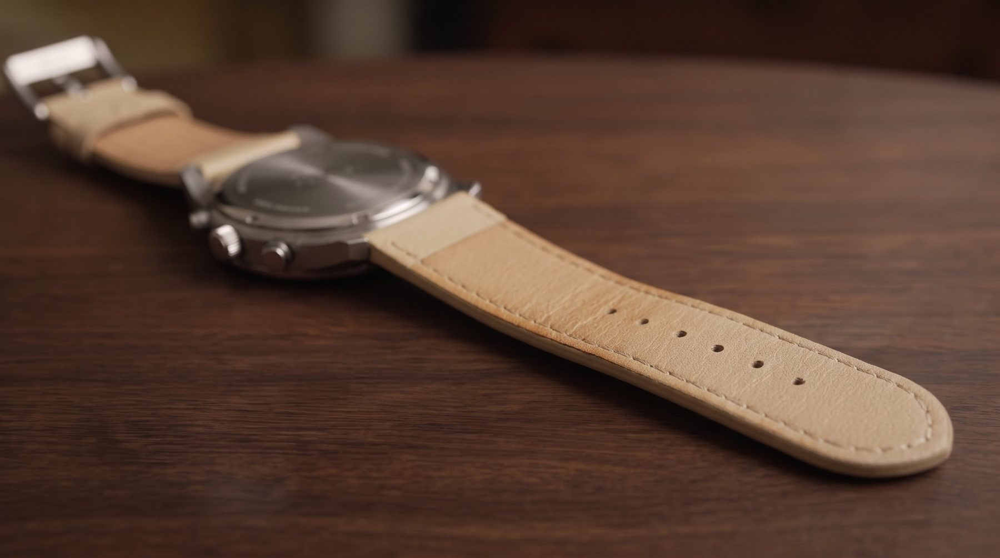
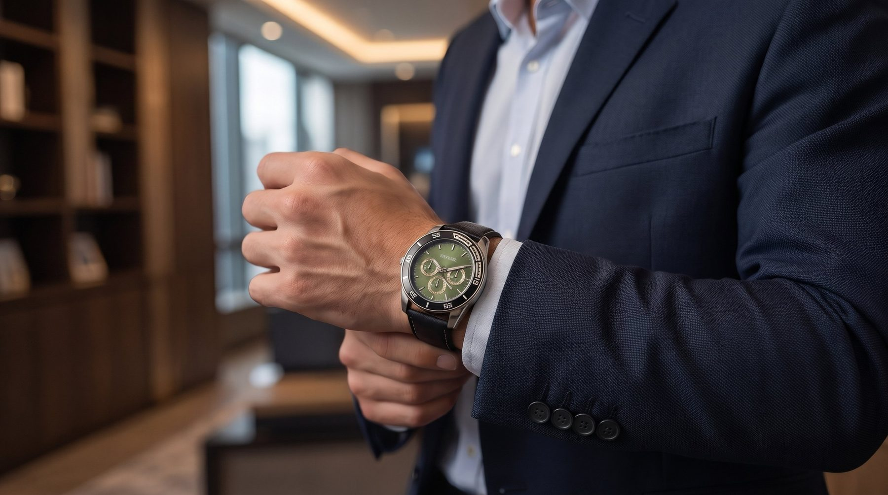
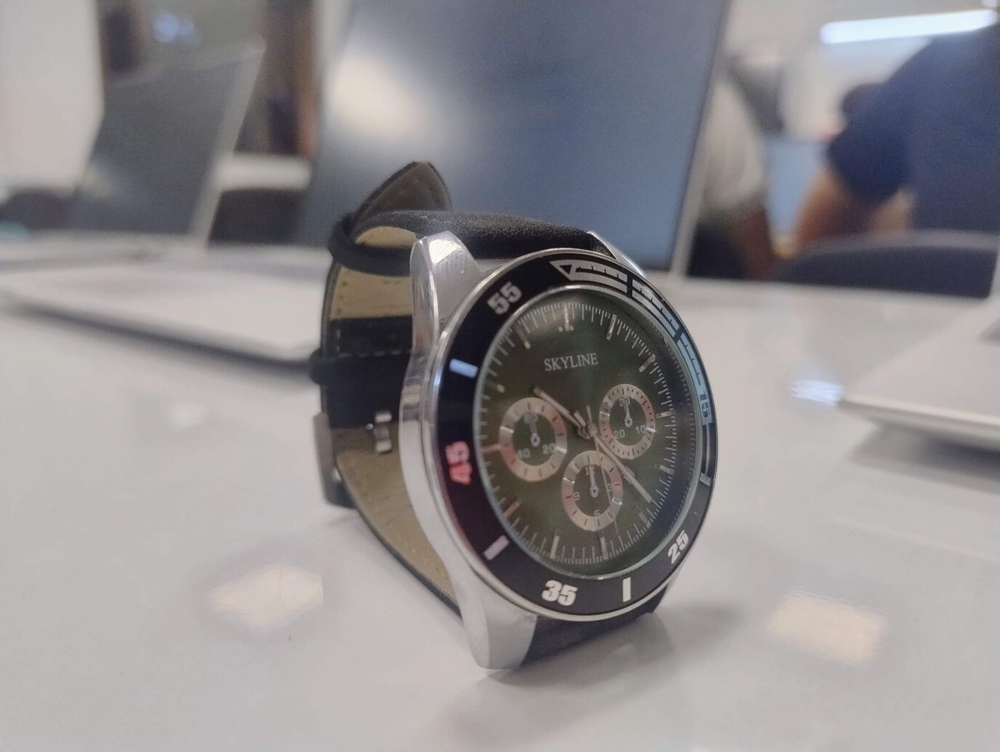
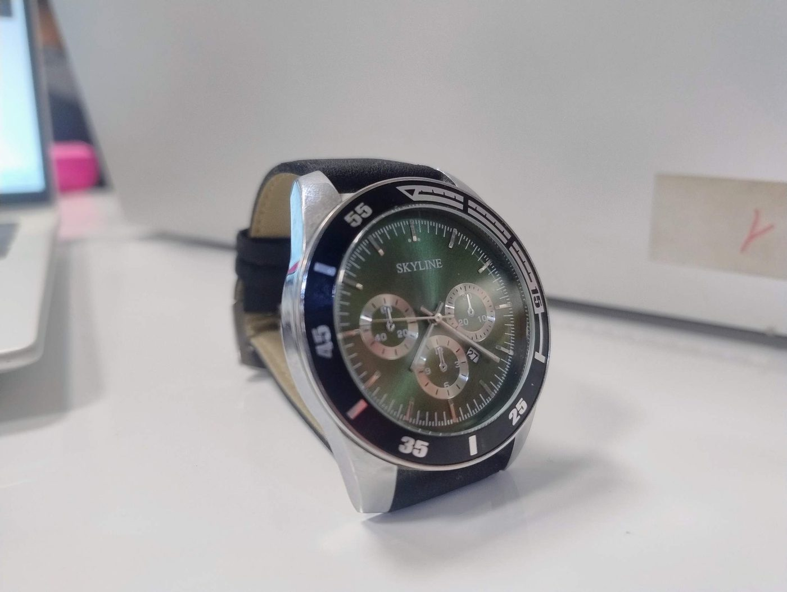
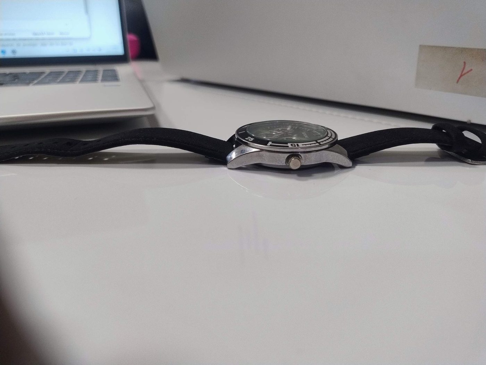
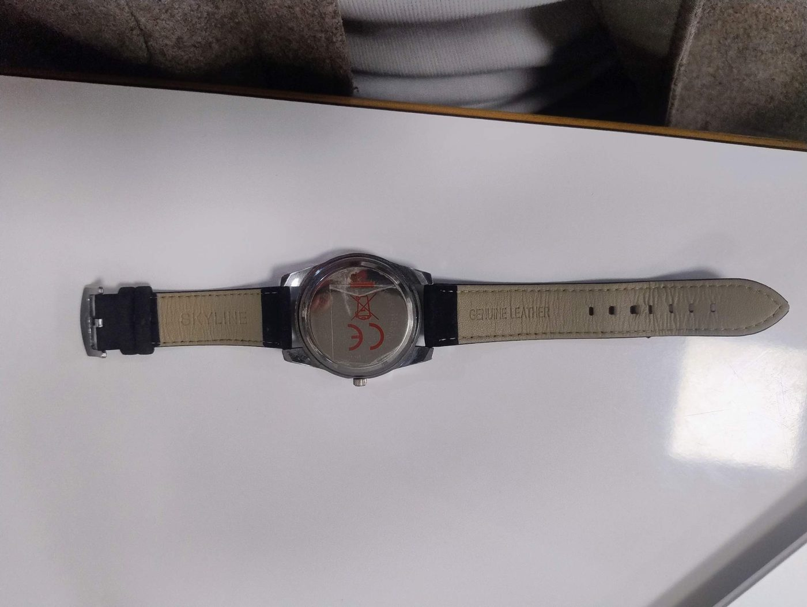

Cronógrafo Skyline
Caja metálica pulida, bisel deportivo y una esfera satinada que cambia con la luz. Seis versiones para seis maneras de llevar el tiempo.
Los detalles

01
Un bisel deportivo negro con índices grabados en blanco —15, 25, 35, 45 y 55— para una lectura ultrarrápida. Debajo, una caja metálica sólida con acabado plateado pulido que atrapa la luz desde cualquier ángulo.
02
Satinada, con un reflejo radial que se mueve con la luz. Tres subesferas de cronógrafo, ventana de fecha y agujas tipo espada con tratamiento luminiscente para leer la hora también de noche.



03
Correa con pespunte en contraste y, por dentro, un forro beige suave y transpirable. Pensada para llevarla horas sin notarla en la muñeca.
La colección
La misma caja y el mismo bisel. Seis esferas y dos correas para que encuentres el tuyo.
Modelo 1 de 6
El original. Sobrio, versátil y con carácter.

Elegante con traje, natural con camiseta. Un reloj para todos los días que no pasa desapercibido.
Por dentro
Cinco capas montadas con precisión: fondo de caja, caja metálica con la correa, esfera con sus tres subesferas y la fecha, cristal y bisel.
De cerca
Fotografías del reloj real, sin estudio ni retoque, para que lo veas como lo vas a tener en la mano.




El spot